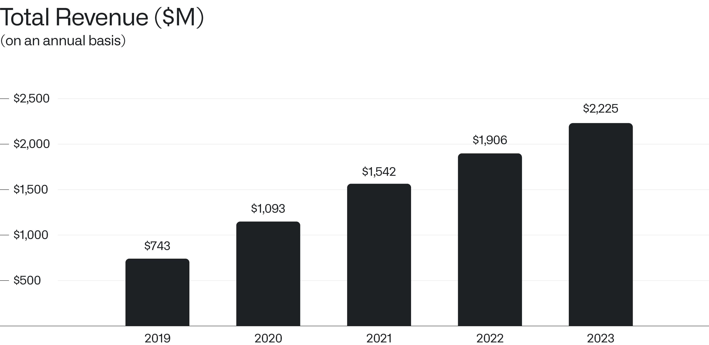
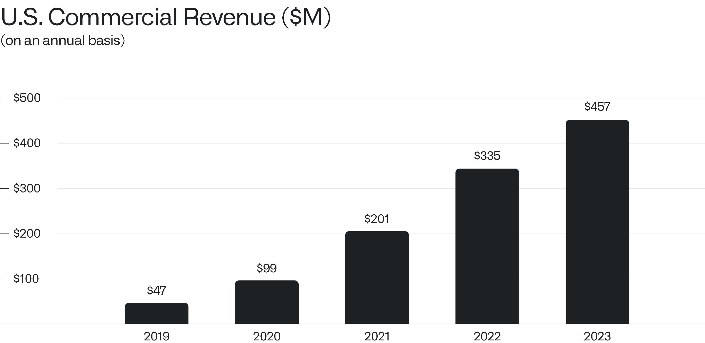
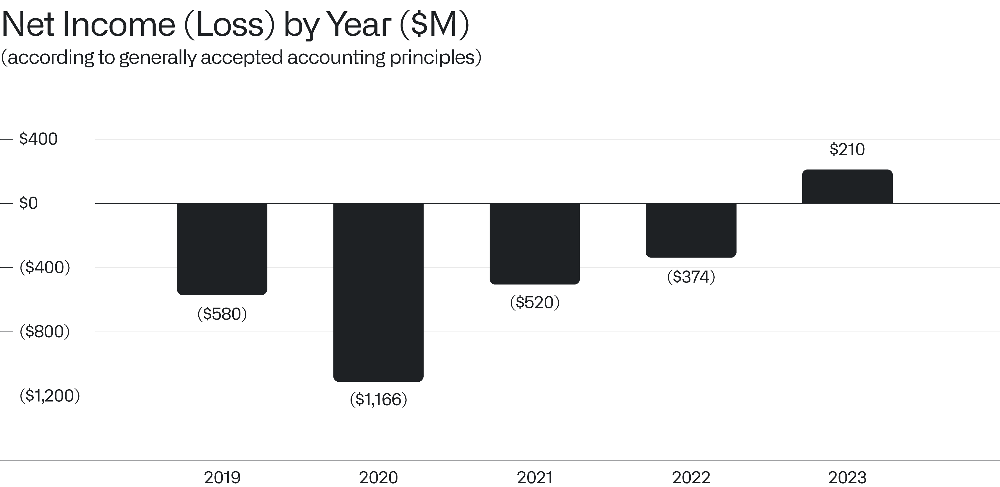
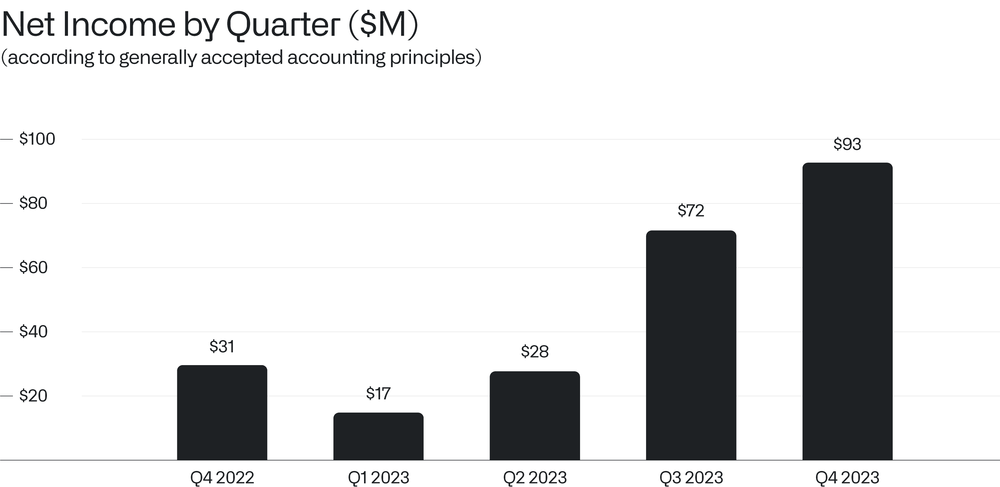

首席执行官年度致信
2024年2月5日

I.
无论是作为一家公司还是作为一个组织，我们的扩张与增长都达到了前所未有的高度。
上个季度，我们创造了 6.08 亿美元的营收，环比增长 9%——这标志着我们公司的增长迎来了显著的再加速。
我们的业绩既反映了自身软件的强劲实力，也体现了各行各业的旺盛需求。各组织多年来不断构建错综复杂的现有技术基础设施，而能够与这些设施有效集成的人工智能平台（包括大语言模型）正迎来需求激增。
经过近二十年的投资，我们已将自身定位为一家全新的软件企业，目前的业绩也印证了这一持续的转型过程。
II.
去年，我们创造了 22.3 亿美元的营收，同比增长 17%；而在上一年度，我们的总营收为 19.1 亿美元。

美国商业业务依然是推动我们增长的重要引擎，我们预计这一趋势将持续下去。
在美国商业市场，我们的营收从去年的 7700 万美元同比增长 70%，在 2023 年第四季度达到 1.31 亿美元，使我们在 2023 年的美国商业总营收达到 4.57 亿美元。
我们目前预计，2024 年美国商业营收将超过 6.4 亿美元，这意味着较去年将实现至少 40% 的增长率。
美国商业机构对大语言模型的需求始终居高不下。我们组织的各个部门正全力推进人工智能平台（AIP）的落地，该平台在短短几个月内便从原型转化为正式产品。如今，AIP 的发展势头正显著转化为新增营收和新客户。

过去，数据集成和分析软件平台的部署与客户现有系统的集成，往往需要数周乃至数月甚至更长的时间。
如今，AIP 最快可在数小时内完成部署并投入运行。
各商业领域的企业曾斥资数亿美元投入于效果平平或宣告失败的数据集成项目，如今在短短数日内便能看到了切实的成果。
大语言模型的激增与热潮掩盖了一个简单的事实：如果没有一种有效的手段让这些自然语言处理系统与组织底层专有的数据进行交互——这些数据往往散落在数百乃至数千个迥异的存储库中——那么此类系统的复杂性与强大能力便失去了意义。AIP 正是那层关键的连接组织，市场对其能力的自发且不受约束的需求，是我们二十年来前所未见的。
2022 年，我们开展的商业试点不足 100 个。而自去年推出 AIP 以来，我们在 2023 年商业业务中开展的 130 多个试点基础之上，已累计举办了超过 500 场训练营。
尽管我们刚刚将 AIP 作为第四大平台推向市场，但我们的产品储备比公司历史上的任何时期都要雄厚。
AIP 是公司的未来，我们相信它将成为整个行业的主导平台。
III.
我们的进展不仅限于销售扩张。在持续关注整个组织盈利能力的同时，我们也在重塑整个公司的运营效率。
上个季度，我们再次创下利润新高——这是公司二十年历史上最大的单季利润。

在 2023 年第四季度，我们实现了 9300 万美元的利润，巩固了连续第五个盈利季度的表现，并使 2023 年成为公司成立以来的首个全年盈利年。因此，我们继续具备纳入标普 500 指数的资格。

鉴于我们持续且不断增长的盈利能力，我们目前看到了一条通往 8 亿至 10 亿美元调整后自由现金流的路径。
我们始终致力于打造一家能在任何宏观经济环境中生存并蓬勃发展的企业。截至 2023 年底，我们持有 37 亿美元的现金、现金等价物及美国国债，较上一年度增加了 11 亿美元。
IV.
我们公司的建立，是基于世界的真实面貌，而非我们主观期盼的理想状态。
事实证明，这个世界远比许多人预期的更加支离破碎且充满危险。
正因如此，我们依然是硅谷为数不多的、其财务与地缘政治利益与美国及全球公众保持根本一致的公司之一。
诚挚的，

Alexander C. Karp
首席执行官兼联合创始人
Palantir Technologies Inc.
前瞻性声明
本信件包含符合 1995 年《私人证券诉讼改革法案》“安全港”条款定义的“前瞻性声明”，包括但不限于关于我们的财务前景、产品开发及相关时间安排、分销与定价、软件平台的预期收益与应用、商业战略及计划（包括与我们的《人工智能平台》（“AIP”）相关的战略与计划、销售与营销工作、销售团队、合作伙伴关系及客户）、业务投资、市场趋势与市场规模、机遇（包括增长机遇）、我们对现有及潜在投资及与各实体商业合同的预期、我们对宏观经济事件的预期、我们对市场指数潜在资格或纳入的预期、我们对股票回购计划的预期以及市场定位的声明。这些前瞻性声明于首次发布之日起作出，且基于当前的预期、估计、预测和推演，以及管理层的信念和假设。诸如“指导”、“预期”、“预料”、“应当”、“相信”、“希望”、“目标”、“项目”、“计划”、“目标”、“估计”、“潜力”、“预测”、“可能”、“将”、“也许”、“可以”、“打算”、“应”等词汇，以及这些术语的变体、否定形式或类似表达，均旨在识别此类前瞻性声明。前瞻性声明受诸多风险和不确定性的影响，其中许多涉及超出我们控制范围的因素或情况。由于多种因素，我们的实际结果可能会与前瞻性声明中所述或暗示的结果产生重大差异，这些因素包括但不限于我们向美国证券交易委员会（简称“SEC”）提交文件中详述的风险，包括截至 2023 年 9 月 30 日财季的 10-Q 表季度报告，以及我们可能不时向 SEC 提交的其他文件和报告，包括提供截至 2023 年 12 月 31 日财季及财年收益新闻稿的 8-K 表当期报告，以及截至 2023 年 12 月 31 日财年的 10-K 表年度报告。特别是，以下因素等可能致使我们的结果与此类前瞻性声明中明示或暗示的结果产生重大差异：我们成功执行业务与增长战略的能力；我们的现金及现金等价物满足流动性需求的充分性；市场对我们平台、产品供应和服务的总体需求；我们增加新客户数量及客户创收的能力；我们将客户合同的部分或全部合同价值转化为营收的能力，包括客户可用的任何合同选择权或受便利终止条款约束的合同期；我们漫长且不可预测的销售周期；我们与第三方成功执行渠道销售及其他战略举措的能力；我们保留并扩大客户群的能力；我们未来各季度经营业绩及关键业务指标的波动；我们业务的季节性；我们平台可能复杂且漫长的实施过程；我们成功开发并部署新技术以满足现有或潜在客户需求的能力；我们使平台和产品更易于安装、消费和使用的能力；我们维持并提升品牌与声誉的能力；随着业务增长及追求业务和财务目标，我们维持并强化企业文化的能力；关于我们的新闻或社交媒体报道，包括但不限于呈现或依赖不准确、误导性、不完整或具破坏性信息的报道；近期或未来的全球宏观经济及地缘政治事件（如持续的俄乌冲突与以色列冲突、美国及其他国家加息、货币政策变化及外币波动）对我们公司或现有/潜在客户及合作伙伴的业务与运营的影响；在我们的平台中使用人工智能引发的问题；以及任何对我们或客户或第三方数据的泄露或访问。
本信件中包含的前瞻性声明代表我们在本信件发布之日的观点。我们预计后续事件和事态发展将导致我们的观点发生变化。我们不承担任何更新或修订任何前瞻性声明的意图或义务，无论是由于新信息、未来事件还是其他原因。不应将这些前瞻性声明视为我们在本信件日期之后任何日期的观点。过往业绩并不必然代表未来结果。
其他说明
本信件可能包含基于独立行业出版物或其他公开信息的数据统计、估计、预测和声明，以及基于我们内部来源的其他信息。这些信息包含诸多假设和局限性，特此提醒您不要过度依赖这些估计。我们并未独立验证这些行业出版物和公开信息中所含数据的准确性或完整性。因此，我们不对该等数据的准确性或完整性作出任何陈述，也不承担在本信件日期后更新该等数据的义务。
在讨论我们的业务时，本信件可能提及各种增长率。除非另有说明，这些比率均反映同比比较。
接收本信件即表示您承认，您将自行对市场及我们的市场地位进行评估，并将自行进行分析且对形成自身观点负全责，观点内容包含所提供的信息，包括关于我们业务潜在未来表现的信息。